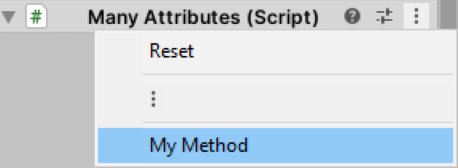

Tools
Are we recording?

Review
Why do we do unit tests?
- To verify functionality of our app
- To protect our app from regression(something that used to work no longer works) without us knowing
Review
Why do we use mocks?
- To test code in isolation
- To simplify the arrange phase of testing
Tools Definition
- Any piece of software that helps you work more efficiently
- Gaming companies have whole teams of tools programmers
IDE Tools:
Visual Studio
- Attaching to Unity
- Conditional Breakpoints
- Immediate Window
- Watch
- Instruction Pointer Modification
Useful Visual Studio Shortcuts
- F5: Start Debugging
- F10: Step Over
- F11: Step Into
- F12: Go to Definition
- Shift + F12: Find All References
- Ctrl + .: Quick Actions
- Ctrl + Shift + B: Start Build
- Ctrl + R + R: Rename All Occurrences
Version Control:
Unity Collaborate
- Unity's solution for version control
- Much more streamlined than regular git (no branching)
- Auto-merges scenes!
Using Unity Collaborate
- It's part of the regular Unity Editor
- Requires a Unity account
- The first GB of data transfered is free
- Can add up to 3 members for a project for free
Commit Changes from the Editor
Invite Teammates to Collaborate
View Collab History
Accessed from Window/Asset Management/Collab History
Diff/Merge tool
- To see diffs and to auto-resolve merge conflicts you need an external Diff/Merge tool
- Has to be enabled from Edit/Preferences/External Tools/Revision Control DiffMerge
Useful Editor-Modifying Attributes
-
[Header("My Header")]:

-
[Tooltip("Appears when hovering over")]:
-
[ContextMenu] void MyMethod() {...}:

Custom Inspector
You can move over all the editor visualization logic to a separate script
using UnityEditor;
using UnityEngine;
// Add the typo of script that you will
// modify the inspector of
// Extend UnityEditor.Editor and NOT MonoBehaviour
[CustomEditor(typeof(MyScript))]
public class MyCustomEditor : Editor {
// All the GUI logic should be in this method
public override void OnInspectorGUI() {
// You can use show the
// automatically generated inspector
base.OnInspectorGUI();
// You can reference the target script
// from the Editor.target property
MyScript myScript = (MyScript)target;
// GUILayout is used for displaying GUI elements
// that automatically fit in the inspector
// You can make a horizontally aligned
// group of GUI objects
GUILayout.BeginHorizontal();
// You can add a label
GUILayout.Label("Set Size");
// You can make buttons and call
// methods of the target script
if (GUILayout.Button("Small"))
myScript.SetSmallSize();
if (GUILayout.Button("Medium"))
myScript.SetMediumSize();
if (GUILayout.Button("Large"))
myScript.SetLargeSize();
GUILayout.EndHorizontal();
}
}Custom Editor
You can write your own custom tools by extending the editor
Cutscenes with Unity Timeline
Organise several animations/events over the course of a timeline to make awesome cutscenes
New Input System
- A more extensible and customizable alternative to the classic input system
- Get it from the Package Manager/Input System
- Set Edit/Project Settings/Player/Active Input Handling to Both
- Check for connected devices in
Window/Analysis/Input Debugger - Start by creating an Input Actions Asset
Input Actions
- Action Maps
- Group actions related to each other
- Actions
- Events that should happen based on input
- Properties
- What should be pressed for an action to be triggered
- Can listen for input
- Can be a regular binding or a 1D/2D composite
InputAction Callbacks
void Start() {
// Call Move() whenever the movement action is started
playerControlls.Player.Movement.started += context => Move();
}Extra Resources
Questions?

That's all folks!